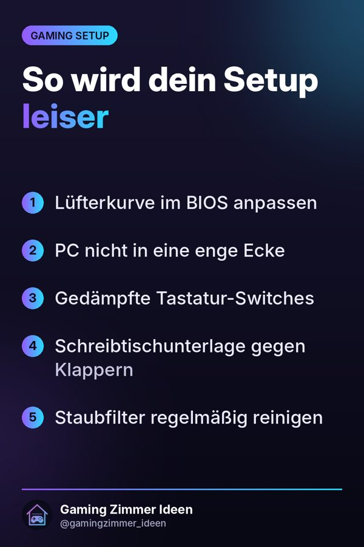

So wird dein Gaming-Setup leiser: 5 Tipps gegen laute Lüfter und Klappern

Dein Gaming-PC ist zu laut? Passe die Lüfterkurve im BIOS an, stell den PC nicht in eine enge Ecke, nutze gedämpfte Tastatur-Switches, leg eine Schreibtischunterlage gegen Klappern hin und reinige regelmäßig die Staubfilter. So wird dein Setup deutlich leiser.
Auf einen Blick
- Lüfterkurve im BIOS anpassen
- PC nicht in eine enge Ecke
- Gedämpfte Tastatur-Switches
- Schreibtischunterlage gegen Klappern
- Staubfilter regelmäßig reinigen
Tipp: Staub ist der häufigste Grund für laute Lüfter. Einmal im Monat die Filter auszuklopfen macht oft schon einen großen Unterschied.